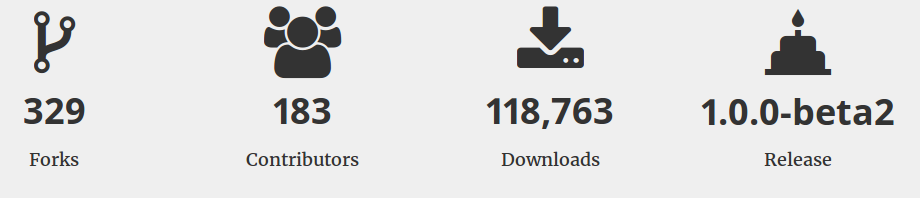
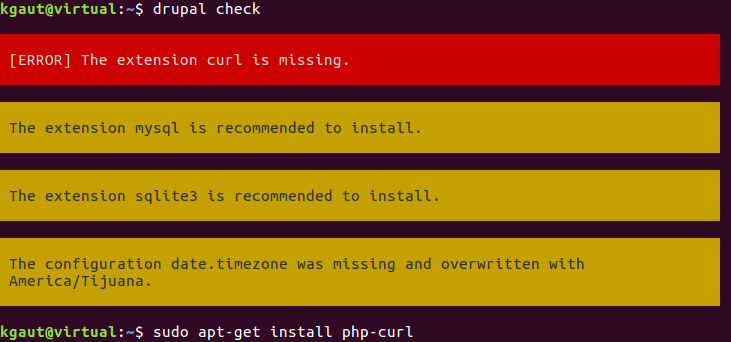
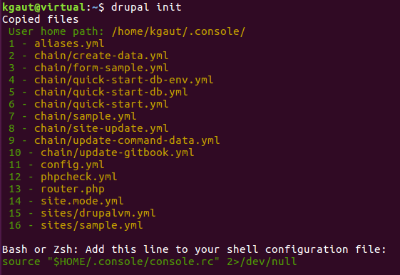
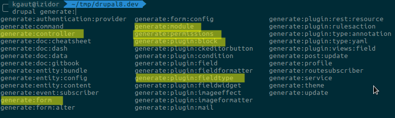

Drupal Console
Drupal Camp Nantes - 11 Juin 2016
Kevin Gautreau / contact@kgaut.net / @kgaut
$ whois
Kevin Gautreau

- Développeur web freelance
Annecy=> Clermont-Ferrand- PHP / Spécialisé drupal
- Twitter : @kgaut
- Github : @kgaut
- Site : https://kgaut.net
Plan
- Intro - Questions
- Drupal 7 - c'était pas si mal
- Drupal 8 - qu'est-ce qui change ?
- Drupal Console
- Génération de machins
- Console vs Drush
- Jubilation, questions, applaudissements, standing ovation...
Introduction
4 questions
- Qui a déjà installé un drupal 8 ?
- Qui a déjà écrit un module drupal 8 ?
- Qui a pleuré des larmes de sang ?
- Qui a testé Drupal Console ?
Drupal 7
Finalement c'était pas si mal

Un module Drupal 7
= 2 fichiers
*.module trop long ?
files[] = mon_module.front.inc
mon_module_HOOK() {
...
}
Un poil de POO ?
files[] = maclasse.class.inc
class MaClass {
...
}
Des outils
Module builder, associé à drush
drush @alias mb mon_module --write- Gestion des dépendances
- Pré-configuration de hook
- ...
Mais au final...
- Création à la main
- copier/coller depuis d'autres modules
Drupal 8, qu'est ce qui change ?
Spoiler : tout
Enfin presque...
Mais quand même
Norme PSR4 => impose une architecture
mon_module/
src/
Controller/
MonModule.php
Entity/
Controller/
Form/
Form/
Plugin/
Test/
mon_module.info.yml
mon_module.libraries.yml
mon_module.service.yml
mon_module.module
Bref...
C'est verbeux...
Heureusement !
Drupal Console
Drupal Console
Qu'est-ce que Drupal Console
Portage de la console Symfony pour Drupal
Un outil en ligne de commande pour assister le développement sous Drupal 8
- Accélerer le développement de module
- Intéragir avec une installation de Drupal 8
- Débugguer une installation de Drupal 8
Accélerer le développement
- Génération de la structure d'un module
- Génération d'un type d'entité
- Génération de formulaire
- Génération de block
- Génération de ...
Intéragir avec une instance D8
- Téléchargement de modules
- Lecture / Écriture de la config
Débugguer
- Liste des routes
-
Passer le site en mode dev
drupal site:mode dev
Mais encore ?
- Scripts chaînés
- Création de fonction custom...
$ whois Drupal console ?

Let's get started

Installation
GNU/Linux & MacOS
curl https://drupalconsole.com/installer -L -o drupal.phar
sudo mv drupal.phar /usr/local/bin/drupal
sudo chmod +x /usr/local/bin/drupal
Installation
Windows
Dans le dossier des binaires de php :
php -r "readfile('https://drupalconsole.com/installer');" > drupal.phar
Premier test
drupal check
Si tout va bien, c'est bien
Sinon, affichage des extensions php manquantes (php-curl entre autres)
Génération des fichiers de config
drupal init
Note : Ajouter --override pour les re-générer
Démo Kickstart Drupal 8
drupal chain --file=~/.console/chain/quick-start.yml
Commande chainée :
- Téléchargement dernière version drupal
- Installation
- Lancement du serveur interne PHP
Démo Kickstart Configuré
drupal chain --file=~/.console/chain/quick-start-custom.yml
/!\ Cassé dans la version 1.0.0-beta2
Générons des trucs !
Génération de modules
drupal generate:module
Génération d'un block
drupal generate:plugin:block
Génération d'un type d'entité
drupal generate:entity:content
Génération d'*
En vrac
Car on peut faire encore plein de choses
Téléchargement de module
drupal module:download pathautoAttention : mieux vaut utiliser composer (pour l'instant)
Installation de module
drupal module:install pathautoInstallation d'une nouvelle langue
drupal locale:translation:addGestion de la config
drupal config:exportdrupal config:importdrupal config:diffDécouvrir les commandes
Avec l'auto-completion :
drupal generate: **tab tab**Avec la commande list*
drupal list* À la racine d'une instance Drupal
Console vs Drush (vs Composer)
Drupal console remplace Drush ?
TL;DR : non
Pour l'instant non.
À terme ? fusion ?
Mon usage
Opération de management de projet : Drush
Scaffolding / Génération : Console
Modules tiers, patchs : Composer (pour l'instant ?)
Script de déploiement
git pull origin master
composer install
drush cr
drush entity-updates
drush updatedb
drush config-import
drush cache-rebuild
Merci
Des questions ?
- Présentation : http://drupal-console.formations.kgaut.net/
- Exemple : https://github.com/kgaut/talk-drupal-console/tree/master/examples
- Twitter : @kgaut
- Github : @kgaut
- Site : https://kgaut.net